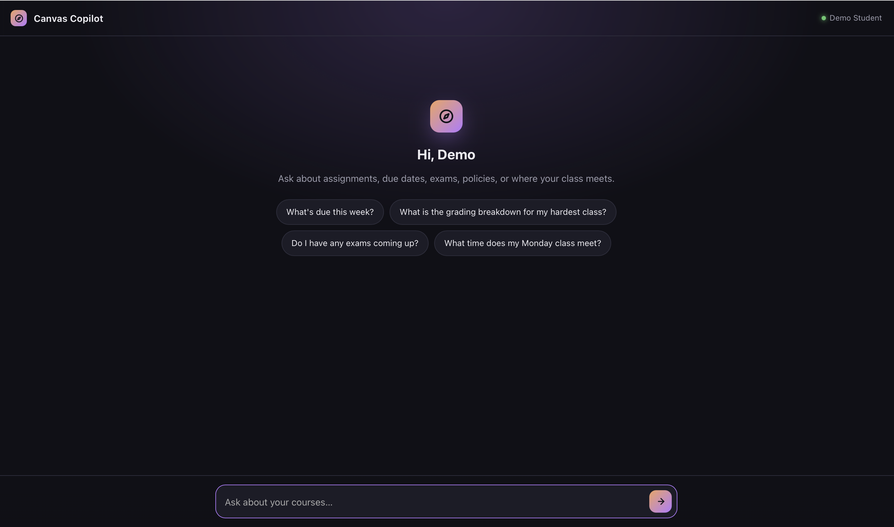
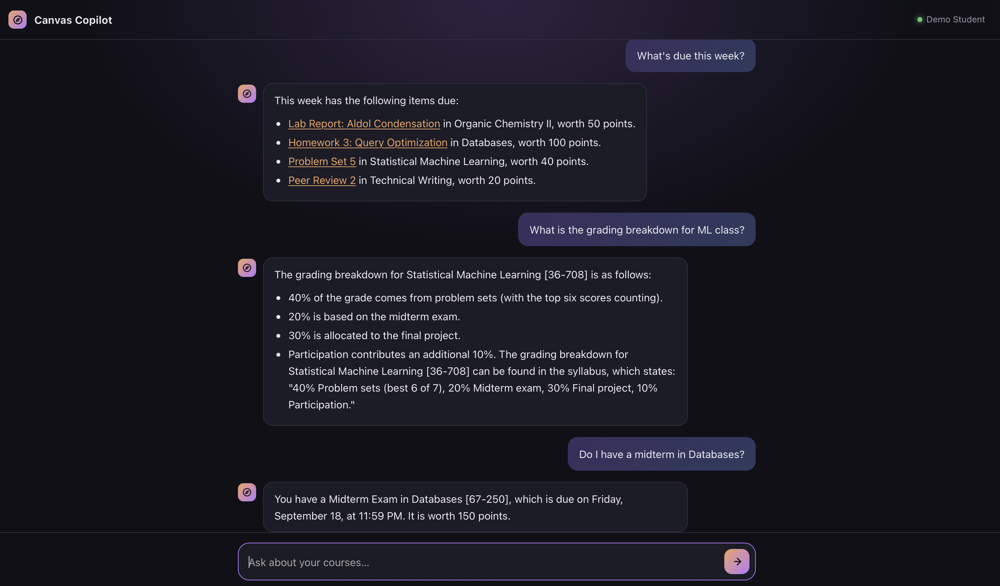

Projects / canvas-copilot
Local LLM · Agent · Hybrid search
Canvas Copilot
Industry: EdTech
A local assistant that answers a student's Canvas questions, like what is due this week or how a class is graded. It runs a small model on the student's own laptop and only reads from Canvas. I built it to solve a problem I see every day, and to learn how to make a small model reliable.
Measured on 17 test conversations that use sample Canvas data. I fixed problems that these same tests exposed, so the score shows the fixes work. It does not promise the same result on new questions.
Problem
Simple questions take too many clicks
As a student, I often need a quick fact from Canvas. What is due this week? How is this class graded? When is the midterm? Each answer sits on a different page, and I have to click through several to find it.
I wanted to ask in plain words and get a direct answer with a link to the right Canvas page. I set these requirements:
- Answer course logistics: assignments, due dates, points, submission status, exams, the grading breakdown, late policy and office hours.
- Never do graded work for the student. This is a navigation tool, not an academic one.
- Only read from Canvas. It must never change anything.
- Ask which course I mean when it is unclear, instead of guessing.
- Keep it private by running the model on the student's own machine.
That last requirement is what makes this project hard. A small model that fits on a laptop makes mistakes that a large hosted model usually avoids, so I had to find those mistakes and design around them.
Approach and architecture
Use the small model for language, and plain code for everything fragile
The agent is a LangGraph state machine with only one step that calls the model. The model chooses which tool to use and writes the final sentence. Plain Python code decides which course the student means, which dates to search, and when to refuse. I put those jobs in code because they are the exact things a small model gets wrong.
The agent stops after 4 tool turns per question and answers with what it has. The count resets for each new question.
For questions about policies, such as the late policy or office hours, the agent also searches the course content: the syllabus, pages and announcements. The search combines keyword matching with embeddings, and it leans toward keywords. If a course only posts its syllabus as a link to an outside document, the agent gives the link and does not guess an answer.
I built it in stages. First I compared models. Then I found where the small model failed and moved each problem into code. After each change I re-ran a set of test conversations to check that nothing broke.
Tools and methods
What I used and why
| Piece | What I used | Why |
|---|---|---|
| Agent loop | LangGraph | An explicit state machine, so I control each step and can pause to ask which course the student means. |
| Model | qwen2.5:3b, run with Ollama | It won my model comparison on tool calling, and it is small enough to run on a laptop. |
| Agent tools | list_courses, resolve_course, course_assignments, course_content, get_todo, get_upcoming_events | These cover the questions students ask most. The model never handles course IDs. |
| Search | SQLite FTS5 (keywords), sqlite-vec with nomic-embed-text (meaning) | Everything lives in one local file, with no server and no cost. |
| Canvas access | httpx, GET requests only | A thin wrapper makes the read-only promise a single check in one place. |
| Course matching | rapidfuzz | It handles nicknames and partial names, like "ML class". |
| Reading content | html2text, pypdf, langchain-text-splitters | They turn Canvas pages and PDFs into small searchable chunks. |
| Interface | FastAPI and one web page, plus a command line | A local web chat with buttons for picking a course, without needing a packaged app. |
| Secrets | The operating system keychain | The Canvas token is never written to a file. |
| Quality checks | pytest, ruff, pyright, GitHub Actions, make eval | Tests run on every push, and the conversation tests run on demand. |
Demo
Watching it work


Both screenshots use sample student data.
Results
What the measurements showed
Choosing the model
First I gave each model a question plus the tool list, and checked whether its first tool call was right. There were 12 cases, each run 3 times.
| Metric | qwen2.5:3b | llama3.2:3b |
|---|---|---|
| Right tool and arguments | 1.0 | 0.70 |
| Refusing graded work | 1.0 | 0.0 |
| Median response time | 1.6 s | 1.9 s |
| Download size | 1.9 GB | 2.0 GB |
llama3.2:3b never looked up the course first when a student named one, and it did not hold the refusal when a request was reworded.
Would a bigger model fix it?
Next I ran 17 full test conversations through the real agent, using sample Canvas data. I compared the 3B model with a 7B model before I made any fixes.
| Metric | qwen2.5:3b | qwen2.5:7b |
|---|---|---|
| Overall | 0.80 | 0.80 |
| Calling tools in the right order | 0.70 | 0.70 |
| Answer structure | 0.55 | 0.65 |
| Refusals | 1.0 | 1.0 |
| Time per conversation | 7 s | 15 s |
| Download size | 1.9 GB | 4.7 GB |
The 7B model fixed some conversations and broke others. It cost about 2.5 times the download and twice the wait, so a bigger model was not the answer.
What fixed it
I kept the 3B model and moved the fragile jobs into code: one combined course tool, date ranges worked out by simple arithmetic, a refusal screen that runs before the model, and course names read from the student's own words. After that, the 3B model scored 1.0 on all 17 conversations. The problem was how I steered the model, not how big it was.
Decisions
The choices that shaped it
- Keep the model on a short leashOnly one step calls the model. Code handles the course, the dates and the refusal, because those are the things a 3B model gets wrong.
- Choose the model by testing itI compared models on tool accuracy, speed and download size, using the same setup the agent uses. I did not pick by reputation.
- Fix the steering before upgrading the modelThe 7B model was not better, so I fixed the flow around the 3B instead. I also skipped fine tuning, since it needs labeled data and is fragile, and I skipped forcing JSON output, since the tests were already at 1.0.
- Give the model one combined course toolThe tool
course_assignmentstakes a course name and finds the course itself. That leaves no course ID for the model to invent and no lookup step for it to skip. - Let code decide the course and the datesCode reads the course phrase from the student's own message and uses it in place of the model's guess. It also works out "today", "this week" and "next week", and drops any dates the model made up.
- Refuse graded work in three layersA pattern screen runs before the model. After a refusal, the conversation stays blocked for vague follow-ups. The system prompt covers phrasings the pattern misses.
- Make read only a single checkThe Canvas client uses plain httpx and raises an error on anything but a GET request. I chose it over a larger Canvas library so the safety rule sits in one place and is easy to test.
- Search by keywords firstPure embedding search failed. All the chunks in a course scored in a narrow band (about 0.35 to 0.40), so a chunk titled "Grade Breakdown" missed the top results for a grading question. Policy answers usually contain the question's own words, so keyword search leads and embeddings help with rephrased questions.
- Give a link instead of guessingWhen a syllabus is only a link to a Google Doc, the agent returns the link. It never opens outside documents, since the tool only navigates Canvas.
- Index each course before it is usedFetching and embedding content is slow, so I do it ahead of time. Each index records its version, so old indexes are rebuilt after a change to the search.
Challenges
What broke and how I fixed it
- The model picked a course on its own"Work in my AI class" became a search for one specific AI course, when the student had two. Now code reads the course phrase from the student's message, and if it matches more than one course, the agent asks the student to choose.
- The model skipped steps or made up datesIt sometimes called a course tool with a half guessed name, or left out the date range. One extra "due today" filter it added even hid an assignment. The combined course tool and the date code removed both problems.
- The refusal leaked when I rewordedIt refused "do my homework" but not "walk me through the solution." I added the three layers and wrote about 30 phrasings that must be refused, plus about 18 normal questions that must not be.
- The model counted the wrong coursesIt treated "Data Science" as an AI course. For questions about the course list, I now give the model the roster directly, and the graph names the matching courses itself.
- Lost track in long chatsIt repeated earlier answers and drifted off the current course. The conversation memory keeps the last course, and the tool turn limit resets for each question.
- Search results blurred togetherEmbedding search could not tell chunks apart. I made the chunks smaller (about 800 characters), added the prefixes the embedding model expects, switched to cosine distance, and led with keyword search.
- Old indexes stayed behindOne search change shipped while old chunks stayed in place with no sign they were stale. Indexes now carry a version number so they rebuild on their own.
How I verified the AI's work
Checking the model, the guardrails and the answers
- I tested at two levelsOne test checks a single tool call. The other runs whole conversations. Single call results did not predict how the model behaves in a conversation, so I needed both.
- I scored the steps as well as the answerThe 17 conversation tests score the order of tool calls, the structure of the answer and the refusals. A right answer reached the wrong way would not pass.
- I fixed unclear tool descriptionsThe only miss in the first test was a question about the courses a student takes this term. The cause was vague tool descriptions, and sharpening them fixed it.
- I tested the refusal both waysThe refusal tests check that bad requests are caught and that normal ones, like "when is it due", are not blocked.
- Read only is enforced in codeThe client raises an error on any request that is not a GET, so the promise does not depend on the model behaving.
- Answers link back to CanvasWhere an answer comes from a Canvas page, it includes the link, so the student can open the page and check it without trusting the model.
- I re-run the tests after every changeOne command (make eval) runs the conversation tests, and GitHub Actions runs the other tests on every push.
What I would improve
Limits and next steps
This is a personal navigation tool that I built to learn from. It has been tested only on limited sample data and is not a finished product.
Known limits
- The tests are small: 12 single call cases and 17 conversations, all on sample Canvas data. A score of 1.0 does not guarantee the same result on new questions.
- I built the fixes around failures the tests exposed, so the tests are likely to be optimistic.
- I compared the 7B model before the fixes and did not test it again afterward.
- The model sometimes swaps a vague course name for a specific one before the code sees it. The code usually catches this, but I do not have an end to end failure rate.
- Policy answers need the course to be indexed first.
- Questions about when a class meets only work if the time is written in the syllabus or a page. The agent does not use Canvas calendar events for this yet.
- Content inside outside documents, like a Google Doc, is not read. The agent only gives the link.
- Conversation memory is lost when the server stops, and the server supports one user.
With more time
- Add tools that read straight from the Canvas API for questions like current grade, quiz score, late policy and quiz length. These need no search.
- Fix the class schedule gap, with a tool that reads the Canvas calendar for one course, so "when does my class meet" works even if the time is not written in the syllabus.
- Combine a number from the API with a fact from the syllabus, for questions like "how much do I need on the final to get an A".
- Add new tools in batches and re-run the tests each time. The 3B model uses tools less reliably as their number grows, and it has six now.
- Add more test conversations, including real questions from other students, and measure how well the search finds the right passage.
What I learned
Four things I will take into my next project
- A bigger model is not always the answer.The 7B model did not beat the 3B. Fixing how the model was steered did much more than upgrading it.
- Let code handle what must be right.Choosing the course, setting the dates and refusing graded work are too important to leave to a small model.
- Test whole conversations, not just single calls.A model can look fine on one tool call and still fall apart over a conversation.
- Build safety into the system, not just the prompt.Read only access and the refusal screen work because code enforces them, whatever the model does.